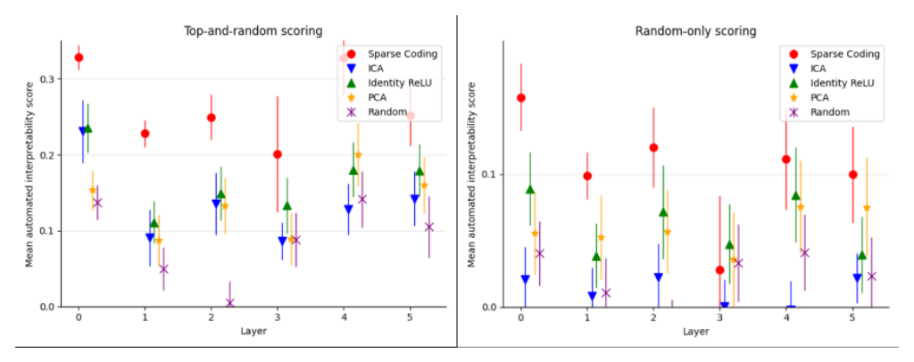

MLP-layer interpretability scores vs. baselines

Reading the two panels
Each panel plots mean automated interpretability score (y-axis) against MLP layer (x-axis, layers 0-5 of Pythia-70M), one point per method: sparse coding, ICA, PCA, the 'Identity ReLU' baseline (treating individual MLP neurons, after their nonlinearity, as the units of analysis), and random directions. Each point is a mean over many features or baseline directions at that layer, with an error bar; two points whose bars overlap should not be read as reliably different. The left panel uses 'top-and-random' scoring, which mixes a feature's highest-activating text fragments with random ones and so tends to read the feature's best case; the right panel uses the stricter 'random-only' scoring, built entirely from randomly sampled fragments, a harder test that yields lower scores across the board (Top-and-random vs. random-only interpretability scoring, Autointerpretability score).
What the scores show
Sparse coding leads clearly at layer 0 in both panels (about 0.33 top-and-random, about 0.15 random-only), well above every baseline. Its advantage narrows through the middle layers, and under random-only scoring it becomes inconsistent: at layer 3 the sparse-coding point drops to about 0.03, below Identity ReLU and within the same range as PCA and random directions, before recovering somewhat at layers 4-5. This differs from the residual-stream results (Figures 2, 8, 9), where sparse coding's lead holds up cleanly across layers.
Why MLP dictionaries are noisier
The paper attributes this weaker, less consistent margin to 'mixed success' training dictionaries on MLP activations (SAE training on the MLP sublayer): many learned features are still more interpretable than individual neurons, but the MLP dictionaries also accumulate large numbers of Dead features that never fire, especially in middle and later layers, so the living dictionary can fail to be genuinely overcomplete. This motivated using an untied encoder/decoder (Tied encoder/decoder weights) for MLP autoencoders specifically. The Default (neuron/residual-stream) basis baseline here (Identity ReLU) sits close to sparse coding at several layers, echoing the paper's separate observation that the residual stream is not expected to have a Privileged basis (sparse-autoencoders, §"C.3 INTERPRETING THE MLP SUBLAYER", p. 15).